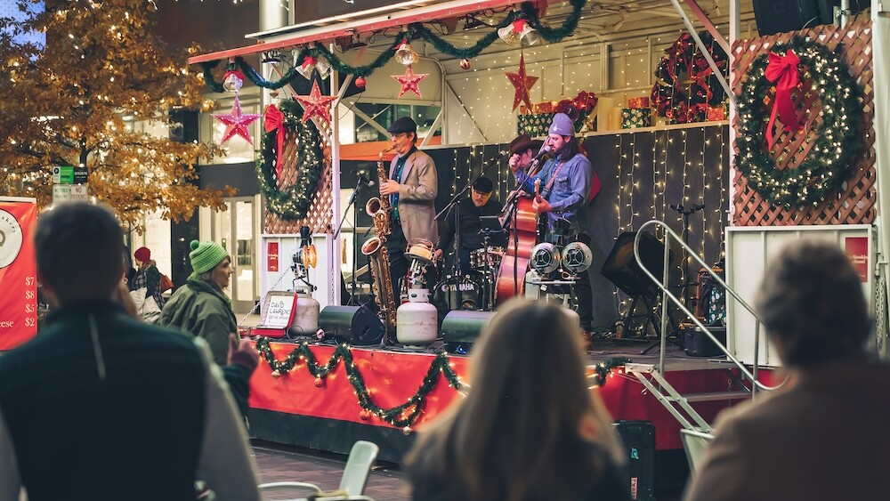

Nueva campaña de apoyo al comercio local
Febrero 2026
ACOMER lanza una iniciativa para impulsar las compras de proximidad.
ACOMER nació en 2015 para apoyar al comercio local de Madrid. La idea siempre ha sido sencilla: juntar a los comerciantes, compartir experiencias y ayudar a modernizar los negocios sin perder la esencia de cada uno.
Además de estos hitos, trabajamos todo el año en programas de formación, asesoramiento y promoción. La idea es que los comercios crezcan juntos y que los barrios se beneficien, creando empleo y manteniendo viva la economía local.
Febrero 2026
ACOMER lanza una iniciativa para impulsar las compras de proximidad.
Marzo 2026
Formación gratuita para ayudar a los comercios a mejorar su presencia online.

Diciembre 2025
Celebramos un encuentro para promocionar los comercios locales en las fiestas.

Enero 2026
Firma de convenio para apoyar el comercio ambulante y local.